Plataforma T-Tea
"T-TEA" é um console para exergames de Chão Interativo voltados ao público com Transtorno do Espectro Autista
(TEA),
mas não exclusivamente.
A plataforma T-TEA nasceu do mestrado de André Bonetto Pereira
e tem como objetivo auxiliar no desenvolvimento de habilidades no público TEA.
Atualmente, a plataforma possui 3 jogos disponíveis, porém mais estão à caminho.
Público Alvo
Profissionais que precisem fazer estimulação motora e cognitiva para diversos públicos como público
TEA (especialmente mas não apenas crianças).
Funcionamento
O Console consiste em uma torre de suporte onde são colocados um projetor, apontado para o chão,
e uma webcam, conectados a um computador que executa os softwares da plataforma e dos seus jogos.
Todos os jogos geram dados a cada sessão de jogo, permitindo assim um acompanhamento do jogador pelo
profissional.
A imagem a seguir exibe um protótipo de torre, onde os equipamentos eletrônicos são colocados e afixados,
porém basta que o projetor esteja direcionado ao chão e conectado a um computador e uma webcam para utilizar os
jogos.
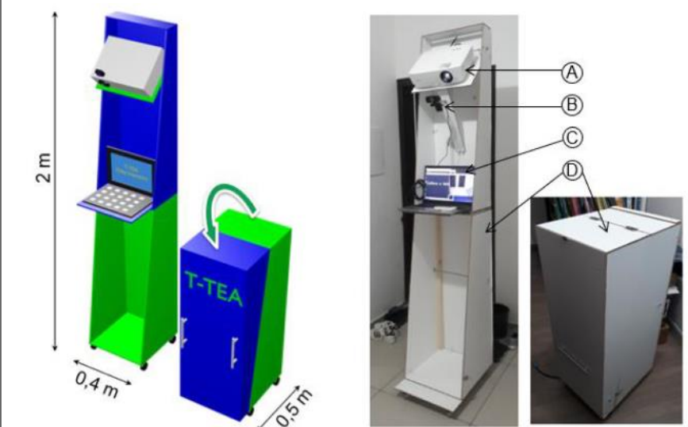
Requisitos
- Computador/notebook com Sistema Operacional Windows
- Projetor de resolução 800x600
- Webcam com lente
- Pacote de instalação do jogo
- Um responsável (especialista) para acompanhar o uso do jogo
Manual de Funcionamento
Hardware: Projetor
Requisitos:
- Deve estar direcionado ao chão, com a projeção invertida verticalmente
- Resolução de funcionamento: 800x600
- Usar o modo "Estender" (Tecla Windows + P -> Estender)
Recomendações:
- Inclinação do projetor: aproximadamente 45 graus
- Formato: não precisa estar exatamente retangular, porém quanto menos trapezoidal, melhor
- Tamanho: depende do jogo, mas recomendamos pelo menos 1,5m de largura em sua área superior
- Ambiente: baixa luminosidade, chão não reflexivo, claro e não escorregadio
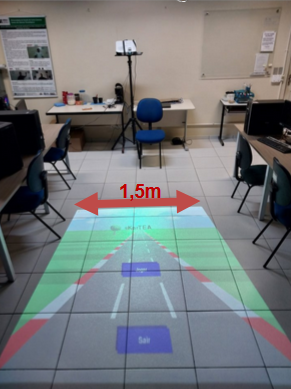
Hardware: Câmera
Requisitos:
- A câmera deve captar toda a projeção bem como todo o corpo do jogador
- Projetar em superfície plana, sem degraus
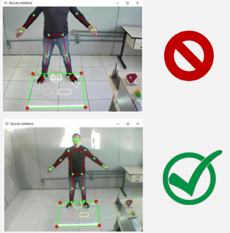
- Pode ser necessário o uso de uma lente do tipo grande angular ou "olho de peixe"
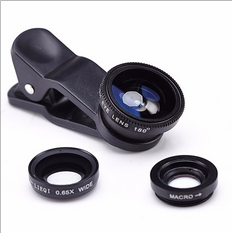
Console T-TEA: Calibração
- É necessário calibrar a plataforma a cada novo uso, independente do jogo a ser utilizado.
1- Será exiboda uma janela de avisos. Aperte a tecla "C" para iniciar Continuar.
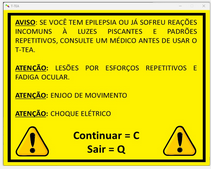
2- Serão exibidas na tela do computador:
a) Tela de controle
b) Mapa de calibração (invertido verticalmente)
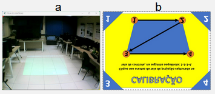
3- Arraste o Mapa de calibração para a projeção no chão, de forma que cubra a área de projeção
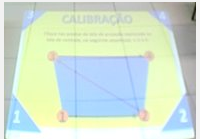
4- Na Tela de Controle (computador), clique nos 4 triângulos azuis na ordem indicada:
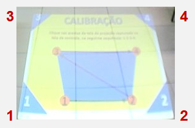
5- Ao terminar, será exibida a janela de sucesso. Clique na janela para selecioná-la e aperte a tecla Q para voltar ao menu.
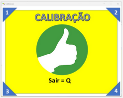
Console T-TEA: Cadastro do Jogador
1- No menu principal, ao clicar em "Cadastrar Novo Jogador", uma nova janela será exibida.
2- Preencha os dados do jogador e clique em "Cadastrar Novo Jogador".
Console T-TEA: Como jogar
IMPORTANTE: Verifique se a calibração da câmera e o cadastro do jogador foram realizados antes de acessar o jogo.
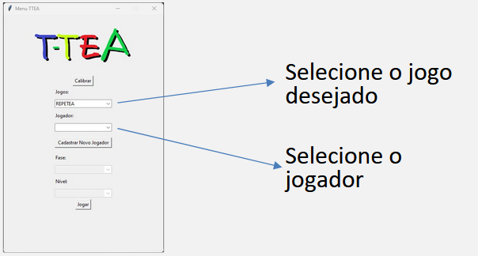
A fase e nível atingido pelo jogador na última sessão são carregados automaticamente (caso seja a primeira sessão, ambos valores serão 1).
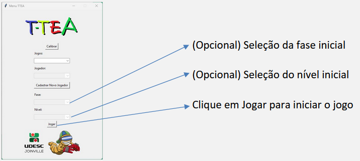
Solucionando Problemas!
O programa não abre/fecha sozinho
- Atualize o componente "Visual C++ Redistributable" do Windows para a versão mais recente.
Câmera não exibe a imagem
- Caso haja duas câmeras conectadas, o jogo utilizará a considerada como primeira pelo Windows
- Para Notebooks:
- A câmera embutida geralmente será a escolhida pelo jogo, assim desative-a para usar outra (em cada sistema, essa ação é diferente, então caso não saiba como fazer, pesquise no Google conforme sua versão do Windows)
Não está reconhecendo o jogador
- Altura do jogador: crianças muito pequenas podem não ser reconhecidas corretamente.
- Iluminação: ambientes muito claros ou muito escuros podem dificultar o reconhecimento do jogador.
- Cor da roupa do jogador
- Roupas muito claras (branco, amarelo claro) ou muito escuras (preto, azul marinho) podem dificultar o reconhecimento do jogador.
- Roupas com muitas estampas ou padrões podem confundir o sistema de reconhecimento.
- Movimentação ou objetos na área capturada pela câmera podem interferir no reconhecimento do jogador.
- Câmera não captura todo o jogador: ajustar a posição da câmera ou utilizar uma lente apropriada, como a "olho de peixe".
O jogo não cabe/é muito maior do que a tela de projeção
- Verifique se a resolução do projetor está configurada para 800x600.
- Verifique se o modo de exibição do Windows está definido como "Estender" (Tecla Windows + P -> Estender).
Meu projetor não aceita a resolução 800x600, apenas maiores
- Utilize o menor tamanho 4:3 disponível, como 1024x768 (não usar widescreen que é 16:9).
- Siga os seguintes passos:
- Na calibração, coloque o Mapa de Calibração encostado no topo e à direita da projeção
- Ao jogar, coloque a Tela de Jogo no mesmo local onde foi colocado o Mapa de Calibração
Jogador/Movimento do jogador não é reconhecido corretamente
- Verifique se não há outra pessoa ou objeto sendo reconhecido no lugar do jogador.
- Verifique se há contraste entre o fundo do ambiente e a vestimenta do jogador
- Refaça a calibração, seguindo os passos no início desta página e se atentando à sequência das ações.
RepeTEA: tela de jogo está preta
- Verifique se na tela de captura não há outra pessoa ou objeto sendo reconhecido no lugar do jogador.
- Verifique se o jogador está posicionado corretamente na parte inferior da tela de projeção.
Os dados da sessão de jogo não estão sendo salvos
- Verifique se durante a sessão os arquivos de dados não estão abertos em outro programa (e.g. Excel).
- Verifique se o jogo foi fechado.
- Verifique de o jogo está sendo finalizado corretamente, conforme esse tutorial